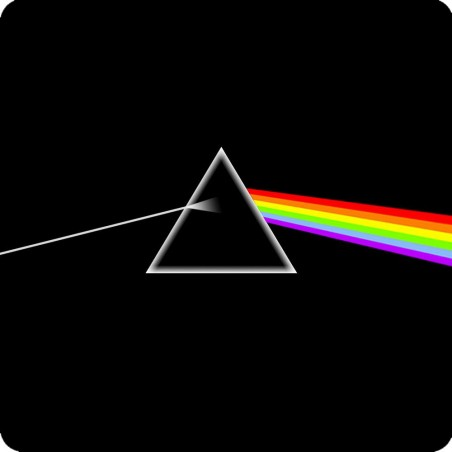
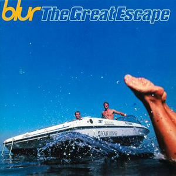

The Dark Side of the Moon
The Dark Side of the Moon es el octavo álbum de estudio del grupo musical británico de rock progresivo Pink Floyd. Salió a la venta el 1 de marzo de 1973 en los Estados Unidos y el 23 de marzo del mismo año en el Reino Unido. Se estima que el álbum ha vendido más de 45 millones de copias a nivel mundial.
El álbum está construido a partir de las ideas que Pink Floyd había explorado en sus conciertos y anteriores grabaciones, pero carece de las largas piezas instrumentales que caracterizaban a los trabajos posteriores a la marcha en 1968 de su miembro fundador, principal compositor y letrista, Syd Barrett.

The Great Escape
The Great Escape es el cuarto álbum de estudio de la banda británica de britpop Blur. Fue lanzado el 11 de septiembre de 1995 por Food y Virgin Records. El álbum alcanzó el número uno en la Lista de álbumes del Reino Unido y se ubicó en el top 10 en más de diez países de todo el mundo. Menos de un año después del lanzamiento del álbum, fue certificado triple platino en el Reino Unido. El álbum recibió una aclamación casi universal en su lanzamiento.
El álbum continuó la racha de sencillos de éxito de la banda, con «Country House», «The Universal», «Stereotypes» y «Charmless Man» todos alcanzando el top 10 del UK Singles Chart.